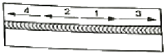
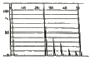
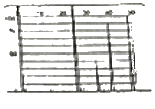
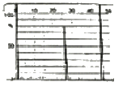
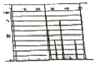
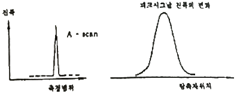

초음파비파괴검사산업기사 (2020-06-06 기출문제)
1과목: 비파괴검사 개론
1. 전자기초음파 탐상의 특징으로 틀린 것은?
- 전기, 음량변화 능률이 멀어진다.
- 탐상간도가 약간 저하된다.
- 접촉매질의 두께에 영향을 받는다.
- 정밀한 두께 측정이나 음속 측정에 적합하다.
(정답률: 71%)

2. 비파괴검사법 중 시험체의 내부와 외부의 압력차를 이용하여 기체나 액체가 결함부를 통해 흘러 들어가거나 나오는 것을 감지하는 방법으로써 압력용기나 배관 등에 적용하기 적합한 시험법은?
- 누설검사
- 침투탐상시험
- 자분탐상시험
- 초음파탐상시험
(정답률: 88%)
3. 물리적 현상의 원리에 따른 비파괴검사 방법을 분류한 것 중 틀린 것은?
- 광학-육안검사
- 열 누설검사
- 투과-방사선검사
- 전자기-와류탐상검사
(정답률: 76%)
4. 침투탐상시험의 적용 방법에 대한 설명으로 옳은 것은?
- 침투시간을 단축하기 위해서는 버너 등으로 탐상 시작 전에 침투액을 가열하여야 한다.
- 습식현상법은 수세성 염색침투탐상시험에 실시하는 것이 효율성을 높일 수 있다.
- 물과 전원이 없는 장소의 대형구조물 부분검사에는 후유화성 형광침투탐상시험이 적합하다.
- 건식현상법은 수세성 또는 후유화성 형광침투액을 사용하는데 주로 이용된다.
(정답률: 61%)
5. 초음파탐상시험에서 공진법으로 시험체의 두께를 측정할 때 2MHz의 주파수에서 기본공명이 발생했다면 이 시험체의 두께는 몇 mm인가? (단, 시험체 내의 초음파 속도는 4800m/s이다.)
- 1.2
- 2.4
- 3.6
- 4.8
(정답률: 52%)
6. 6:4황동에 1% 내외의 Fe를 합금하여 결정립을 미세화하고 연신율의 감소 없이 강도를 증가시킨 고강도 황동은?
- 델타메탈(delta metal)
- 모넬메탈(monel metal)
- 두라나메탈(durana metal)
- 네이벌 브라스(naval brass)
(정답률: 64%)
7. 결정구조 및 격자에 대한 설명으로 옳은 것은?
- 금속은 상온에서 불규칙적인 결정구조를 갖는다.
- 전위, 적층결함 등의 격자결함을 점결함이라 한다.
- 온도 또는 압력 변화에 의해 결정구조가 달라지는 것을 자기변태라 한다.
- 용매금속의 결정격자 용질금속이 들어간 상태를 고용체라 한다.
(정답률: 71%)
8. 온도에 따른 열팽창계수, 탄성계수 변화가 작아 고급시계, 정밀 저온 등의 부품에 사용되는 Ni합금은?
- 콘스탄탄(constantan)
- 모넬합금(monel metal)
- 알드레이(alrcy)
- 엘린바(elinvar)
(정답률: 74%)
9. 리드 프레임(lead frame) 재료에 요구되는 성능이 아닌 것은?
- 고짐적화에 따라 열방산이 좋은 것
- 보다 작고 엷게 하기 위하여 강도가 클 것
- 재료의 치수정밀도가 높고 잔류응력이 클 것
- 본딩(bonding)하기 용이하도록 우수한 도금성을 가질 것
(정답률: 69%)
10. 오스테나이트계 스테인리스강의 공시(pitting)을 방지하기 위한 대책이 아닌 것은?
- 할로겐 이온의 고농도를 피한다.
- 산소농담전지의 형상을 극대화 한다.
- 질산염, 크롬산염 등의 부동태화제를 가한다.
- 재료 중의 탄소를 적게 하거나 Ni, Cr, Mo등을 많게 한다.
(정답률: 58%)
11. 강과 비교한 회주철의 특징을 설명한 것 중 틀린 것은?
- 감쇠능이 크다.
- 열전도도가 높다.
- 피삭성이 우수하다.
- 압축강도에 비해 인장강도가 크다.
(정답률: 59%)
12. 과공석강의 탄소함유량은 약 몇 wt%인가?
- 0.025~0.8%
- 0.8~2.0%
- 2.0~4.3%
- 4.3~6.67%
(정답률: 73%)
13. 다음 중 강의 담금질성을 개선시키는 효과가 가장 큰 것은?
- B
- Si
- Ni
- Cu
(정답률: 67%)
14. 철강의 5대 원소에 해당되는 것은?
- C, Si, Mn, P, S
- Ti, Mo, Cr, P, S
- Si, Mn, Mo, Cr, S
- Si, Mn, Ta, Cu, Sn
(정답률: 81%)
15. 어떤 물질이 일정한 온도, 파장, 전류밀도하에서 전기저항이 0(zero)이 되는 현상은?
- 초투자율
- 초저항
- 초전도
- 초전류
(정답률: 85%)
16. 고체 상태에 있는 무개의 금속 재료를 일이나 압력 또는 열과 압력을 동시에 가해시 서로 접합 시키는 기술을 무엇이라고 하는가?
- 리벳
- 용접
- 접어 잇기
- 기계적 이음
(정답률: 79%)
17. AW240, 정격 사용률이 50%인 용접기를 사용하여 200A로 용접할 때 이 용접기의 허용 사용률은?
- 54%
- 60%
- 72%
- 120%
(정답률: 67%)
18. 다음 중 언더컷의 원인이 아닌 것은?
- 전류가 너무 높을 때
- 아크 길이가 짧을 때
- 용접 속도가 적당하지 않을 때
- 용접봉 유지 각도가 부적당할 때
(정답률: 62%)
19. 수축과 전류응력을 줄이기 위해 사용하는 용착법으로 그림과 같은 용착법은?

- 백스탭법
- 스킵법
- 전진법
- 대칭법
(정답률: 76%)
20. 다음 고류 아크 용접기 중 가변 저항의 변화로 용집 전류를 조정하며 조작이 간단하고 원격 제어가 가능한 용접기는?
- 텝 전환형 용접기
- 가동 철심형 용접기
- 가동 코일형 용접기
- 가포화 리액터형 용접기
(정답률: 70%)
2과목: 초음파탐상검사 원리 및 규격
21. 음파 속도가 6000m/s이고 두께가 10mm인 재료의 공진 주파수는?
- 0.3MHz
- 0.5MHz
- 5MHz
- 10MHz
(정답률: 48%)
22. 6인치 두께의 알루미늄판에 표면으로부터 3인치 깊이에 표면과 평행하게 큰 결함이 놓여 있다면 어떤 탐상법으로 결함이 가장 잘 검출될 수 있는가?
- 수직 탐상법
- 판파 탐상법
- 표면과 탐상법
- 경사각 탐상법
(정답률: 68%)
23. 어떤 재질에서 음파의 속도가 6000m/s이고 주파수가 2MHz일 때 이 음파의 파장은?
- 1.2mm
- 3mm
- 12mm
- 30mm
(정답률: 56%)
24. 수침법으로 강(steel)과 알루미늄(aluminium)을 탐상할 때, 알루미늄과 비교했을 때 강에서 횡파의 굴절각은?
- 알루미늄에서보다 작다.
- 알루미늄에서보다 크다.
- 알루미늄에서와 같다.
- 입사각에 따라 다르다.
(정답률: 52%)
25. 종파를 사용하여 두 재료를 수직 초음파검사할 때, 재료의 경계면에서 음압반사율이 가장 높은것끼리 짝지은 것은?
- 물-알루미늄
- 아크린-물
- 아크릴-기름
- 기름-물
(정답률: 67%)
26. 10Q20N 수직탐촉자를 이용하여 측정한 두께 35mm의 시험체의 건전부 제1저면 에코와 제2저면 에코의 크기가 각각 HB1=25dB, HB2=20dB일 때 감쇠계수 a[dB/mm]는 얼마인가? (단, 반사 및 확산에 의한 손실은 무시할 정도로 작다.)
- 0.071
- 0.14
- 0.64
- 2.5
(정답률: 45%)
27. 초음파탐상시험의 원리에서 시험방법의 적용예에 대해 기술한 것으로 올바른 것은?
- 강판의 라미네이션 탐상에는 주로 경사각탐상이 이용된다.
- 강의 맞대기용접부 탐상에는 주로 수직탐상이 이용된다.
- 모서리 이음이나 T이음 등의 용접부에서 수직탐상이 유효한 경우에는 그것을 병용한다.
- 파이프 등의 내면의 부식량 계측에는 스트레인 계측이 이용된다.
(정답률: 62%)
28. 강판의 두께 100mm를 왕복 전파하는 초음파(종파)의 전파시간은? (단, 강재중의 종파속도는 5900m/s로 한다.)
- 약 1만분의 3초
- 약 100만분의 30초
- 약 3초
- 약 3분
(정답률: 66%)
29. 광대역 탐촉자에 대한 설명으로 바른 것은?
- 에코의 지속시간은 통상의 탐촉자에 비해 길게 된다.
- 에코의 주파수 범위가 넓다.
- 근거리 분해능이 나빠진다.
- 에코의 폭이 매우 넓다.
(정답률: 44%)
30. 압전 소자재료 중에서 초음파의 송신 효율이 가장 좋은 재료는?
- Lithium sulfate
- Quartz
- Barium titanate
- silver oxide
(정답률: 60%)
31. 강 용접부의 초음파탐상 시험방법(KS B 0896)에 따라 탐상시험 시 사용하는 경사각탐촉자의 입사점과 굴절각을 조정 및 점검하는 시기는?
- 작업개시 시 및 작업시간 4시간 이내마다
- 작업개시 시 및 작업시간 8시간 이내마다
- 작업종료 시 및 작업시간 10시간 이내마다
- 작업종료 시 및 작업시간 12시간 이내마다
(정답률: 67%)
32. 보일러 및 압력용기에 대한 초음파탐상검사(ASME Sec,V Art.4)에 따라 직접 접촉법에 의한 초음파탐상 시 교정시험편과 시험체 표면과의 온도 차이는 얼마까지 허용되는가?
- 8℃
- 10℃
- 14℃
- 18℃
(정답률: 60%)
33. 강 용접부의 초음파탐상 시험방법(KS B 0896)에 의하여 평판 맞대기 이음 용접부의 경사각 탐상 중 관두께가 40mm를 초과하고 60mm 이하인 재료에 대한 초음파탐상방법으로 옳은 것은?
- 굴절각 45°를 사용하여 한면 양쪽에서 탐상한다.
- 굴절각 60° 또는 70°를 사용하여 양면 한쪽에서 탐상한다.
- 굴절각 45°를 사용하여 양면 한쪽에서 탐상한다.
- 굴절각 60° 또는 70°를 사용하여 한면 양쪽에서 탐상한다.
(정답률: 67%)
34. 강 용접부의 초음파탐상 시험방법(KS B ⑤36)에서 초음파의 음속이 6000m/s이고 초음파가 재료 속을 왕복하는 시간이 1×10-4초 일 때 측정물의 두께는?
- 10cm
- 20cm
- 30cm
- 60cm
(정답률: 40%)
35. 보일러 및 압력용기에 대한 초음파탐상검사(ASME Sec,V Art.23 SA-577)에서 초음파탐상시험의 교정을 위해 사용되는 교정노치의 깊이와 최소길이는?
- 강판두께의 3% 깊이, 최소길이 12.5mm
- 강판두께의 3% 깊이, 최소길이 25mm
- 강판두께의 5% 깊이, 최소길이 12.5mm
- 강판두께의 5% 깊이, 최소길이 25mm
(정답률: 42%)
36. 강 용접부의 초음파탐상 시험방법(KS B 0896)에서 규정한 5MHz 경사각탐촉자의 원거리 분해능은 얼마 이하이어야 하는가?
- 2mm 이하
- 3mm 이하
- 5mm 이하
- 9mm 이하
(정답률: 45%)
37. 보일러 및 압력용기에 대한 초음파탐상검사(ASME Sec,V Art.4)에서 규정하고 있는 초음파탐상장치는 교정된 스크린(sereen) 높이의 20~100%에서 전스크린 높이의 몇 % 이내의 스크린 높이 직선성을 나타낼 수 있어야 하는가?
- ±5%
- ±%
- ±10%
- ±8%
(정답률: 71%)
38. 강 용접부의 초음파탐상 시험방법(KS B 0896)에서는 경사각 탐촉자와 성능 점검주기를 규정하고 있다. 요구되는 점검주기가 제일 짧은 것은?
- 탐상감도
- 원거리 분해능
- 불감대
- 빔 중심축의 치우침
(정답률: 59%)
39. 금속 재료의 펄스 반사법에 따른 초음파탐상시험 방법 통칙(KS B 0817)에 따른 초음파 탐상장치의 점검 종류가 아닌 것은?
- 일상 점검
- 수리 점검
- 정기 점검
- 특별 점검
(정답률: 62%)
40. 보일러 및 압력용기에 대한 초음파탐상검사(ASME Sec,V Art.4)에 따라 수직탐상 할 때 설정하는 거리진폭교정곡선의 절차에 대한 설명으로 틀린 것은?
- 기본 교정시험편의 구멍에서 나오는 진폭 중 가장 높은 지점을 찾는다.
- 가장 높은 진폭이 나오는 구멍에서 최대 응답을 주는 위치에 탐촉자를 위치시킨다.
- 전스크린 높이의 80%가 되도록 감도를 조종한다.
- 가장 높은 지점의 지시값과 다른 한 구멍 최대 지시값의 1/2되는 부분을 스크린에 표시선으로 연결한다.
(정답률: 69%)
3과목: 초음파탐상검사 시험
41. STB-A1 길이 100mm 방향에 5220N의 탐촉자를 이용하여 초음파를 입사하였을 때의 탐상도형으로 측정 범위가 200mm일 때 자연에코에 대한 도형으로 옳은 것은?




(정답률: 60%)
42. A 스캔 장비의 스크린에서 지면반사파의 강도(음압)를 나타내는 것은?
- 반사파의 폭
- 반사파의 위치
- 반사파의 거리
- 반사파의 높이
(정답률: 78%)
43. 대부분의 초음파탐상시험에서 펄스반사식 초음파탐상기에 사용되는 표시방법은?
- 자동판독장치
- B-스캔 표시
- A-스캔 표시
- C-스캔 표시
(정답률: 75%)
44. 다음 중 결함 크기 추정법이 아닌 것은?
- 6dB Drop법
- Sound Velocity Envelope 이용법
- DGS(AVG) 선도 이용법
- DAC 곡선 이용법
(정답률: 71%)
45. 초음파탐상시험 중 나타나는 결함의 종류에 따른 파형 표시에 대한 설명으로 틀린 것은?
- 라미네이션은 다중에코가 생기고 에코가 등간격으로 여러 개 나오는 경우가 많다.
- 산재하는 블로우홀은 에코높이가 높고, 폭이 넓은 것이 특징이다.
- 비금속개재물에 의해 얻어진 에코는 일반적으로 저면 에코도 동시에 나타난다.
- 표면에코와 저면에코의 사이에 에코가 나타나면 라미네이션이나 비금속개재물의 내부균열이라 생각할 수 있다.
(정답률: 43%)
46. 탐촉자의 주파수 선정에 대한 설명 중 맞는 것은?
- 탐상면에 가까운 결함을 검출할 때는 낮은 주파수가 좋다.
- 감쇠가 큰 재료에서는 높은 주파수가 좋다.
- 입자가 큰 재료에서는 높은 주파수가 좋다.
- 작은 결함까지 검출할 때는 높은 주파수가 좋다.
(정답률: 67%)
47. 용접부를 경사각 탐촉자로 검사 시 입사점으로부터 탐촉자 앞쪽 끝부분까지의 길이를 무엇이라 하는가?
- 진동자 유효길이
- 접근한계길이
- 접속거리
- 흡음재 길이
(정답률: 64%)
48. 거리를 횡축으로 하고 증폭(Gain)을 중축으로 하고, 탐촉자로부터의 거리가 다양하고 직경도 다양한 평저공과 같은 작은 반사원의 에코를 다양한 거리에 있는 저면에코와 같은 큰 반사원과 비교하여 그 차이로 결함의 크기를 추정하는 방법은?
- DAC 선도
- DGS 선도
- ASTM 선도
- H&D 선도
(정답률: 55%)
49. 황동에 대한 음향 임피던스는 얼마인가? (단, 황동의 밀도는 8400kg/m3, 황동의 음파속도는 4400m/s이다.)
- 37×106kg/(m2ㆍs)
- 17×106kg/(m2ㆍs)
- 37×108kg/(m2ㆍs)
- 17×108kg/(m2ㆍs)
(정답률: 58%)
50. 탐촉자의 이동거리를 사용하여 결함높이를 측정하는 일반적인 방법이 아닌 것은?
- 3dB drop법
- 6dB drop법
- 10dB drop법
- 20dB drop법
(정답률: 61%)
51. 초음파 탐촉자에서의 빔의 퍼짐은 주로 무엇에 좌우되는가?
- 탐상방법
- 펄스의 길이
- 주파수 및 진동자 크기
- 내마모판(wear plate)의 두께
(정답률: 83%)
52. 초음파탐상검사 시 CRT의 수평축에서 특정구역의 결함에코만을 나타내기 위해 설정하는 것은?
- DAC회로
- 리색션
- 게인(gain)
- 게이트
(정답률: 69%)
53. 초음파 시험을 위해 2개의 송수신 탐촉자를 사용하여 초음파 감쇠정도를 판단하고 결함을 탐지하는 초음파 검사법의 종류는?
- 수침법
- 반사법
- 투과법
- 간접법
(정답률: 67%)
54. 아래 그림과 같이 A-scope에서 하나의 날카로운 형태의 에코를 나타내고, 탐촉자를 움직일 때에 진폭이 최대값을 중심으로 부드러운 곡선 모양으로 나타낼 때에 결함의 종류로 가능한 것은?

- 단일 점상 결함
- 크고 평활한 반사체
- 크고 불규칙한 반사체
- 복수 결함
(정답률: 60%)
55. 초음파 에코의 진폭이 스크린 높이의 30%에서 게인을 조절하여 스크린 높이의 60%가 되었다. 이 때 변화한 게인은 얼마인가?
- 3dB
- 6dB
- 20dB
- 30dB
(정답률: 77%)
56. 집속형 수직탐촉자에 대한 최대 장점으로 옳은 것은?
- 파형변이(mode conversion)가 일어나기 쉽다.
- 초음파 빔이 탐상면으로부터 어느 일정한 거리에 집속되기 때문에 거리분해능이 우수하다.
- 특히 고온에서의 사용이 가능하다.
- 파형변이(mode convcrsion)의 영향을 받기 쉬우며 수신효율이 우수하다.
(정답률: 66%)
57. 초음파검사 탐상기의 감도조정과 분해능의 측정에 사용되는 시험편으로서 Ø1. Ø2. Ø4, Ø8 구멍을 가진 것은?
- STB A1 시험편
- STB-A2 시험편
- STB-A3 시험편
- STB-G 시험편
(정답률: 61%)
58. 다음 중 초음파탐상검사 시 고려해야 할 사항으로 적합하지 않은 것은?
- 시험체의 형상
- 시험체의 재질
- 시험체의 치수
- 시험체의 조도
(정답률: 76%)
59. 접촉매질 선정 시 고려할 사항이 아닌 것은?
- 피검체의 표면조건
- 피검체의 온도
- 피검체의 크기
- 피검체와 접촉매질간의 화학반응
(정답률: 78%)
60. 국제용접협회(Ⅱw)에서 제안되어 ISO에서 사용되는 시험편으로서 탐상장치의 조정에 주로 사용되는 시험편은 어느 것인가?
- STB A1 시험편
- STB-A2 시험편
- STB-A3 시험편
- STB-G 시험편
(정답률: 65%)
전자기초음파 탐상은 고주파 전자기파와 저주파 음파를 이용하여 물체 내부를 탐색하는 방법입니다. 이 방법은 접촉 없이도 측정이 가능하며, 정밀한 두께 측정이나 음속 측정에 적합합니다.
하지만 전자기파와 음파의 파장이 서로 다르기 때문에 탐상간도가 약간 저하되며, 접촉매질의 두께에 영향을 받습니다. 이는 전자기파와 음파가 매질 내부에서 서로 다른 속도로 전파되기 때문입니다. 따라서 접촉매질의 두께가 증가하면 전자기파와 음파가 매질 내부에서 더 멀리 전파되므로 탐상 결과에 영향을 미칩니다.